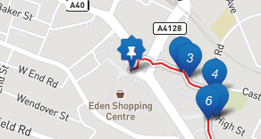

To start the trail make your way to the starting point: Wycombe Tourist Information Office. You can find the location of the Tourist Information Office on the map marked in the following way:

When you arrive at a location marked on the map you can click on the map marker to get more information about the current location you are at.
Each location will have its own video; our Soldier John will teach you about history of each location during the war. Each location will also come with background notes, imagery and if you don't have the option to listen to the video just click the dialog button to read through what John and his friends have to say.
Work your way through all the locations to finish the trail.
Credits
In no particular order –
Mike Dewey Jackie Kay Sally Scagell The High Wycombe Society
Matt Dye Liam Burton Malcolm Connell
Harrison Boileau Helena Chance Jon Jackson Richard Mather Bruce Sinclair Renee Thomassen
Jamie Flitney Robert Hucks Devon van Der Berg Final Year Computing students First Year students, BA(Hons) Creative Advertising
Ian Massey
Photo credits Bucks Free Press Library Archive area
Kristen Bailey Jill Boyd Hilary Brash Rachel Ervine Hannah Krasner
James Hemsley Luca Webb
Stained glass window photo provider
Ian Beckett
"High Wycombe's Contribution to Aviation" by David Scott and Ian Simmons
Help
Location not showing or incorrect?
Sometimes we can lose your position, either completely or you may end up showing on the map in the wrong location. If you persistently experience this issue, please refresh the website by clicking here.
Found a bug?
If you have found a problem with the website please let us know via email: community@wycombe.gov.uk. Please provide a description of the problem, a screenshot (if possible), and the make and model of device (e.g. iPhone 6) that you were using when experiencing the problem.